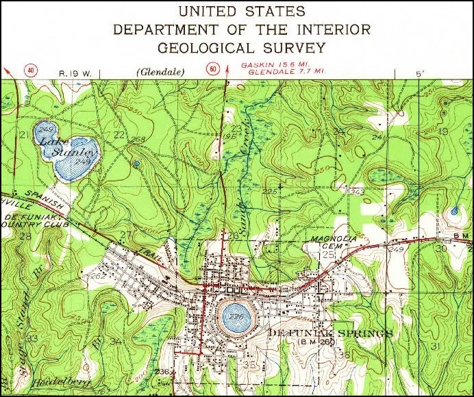
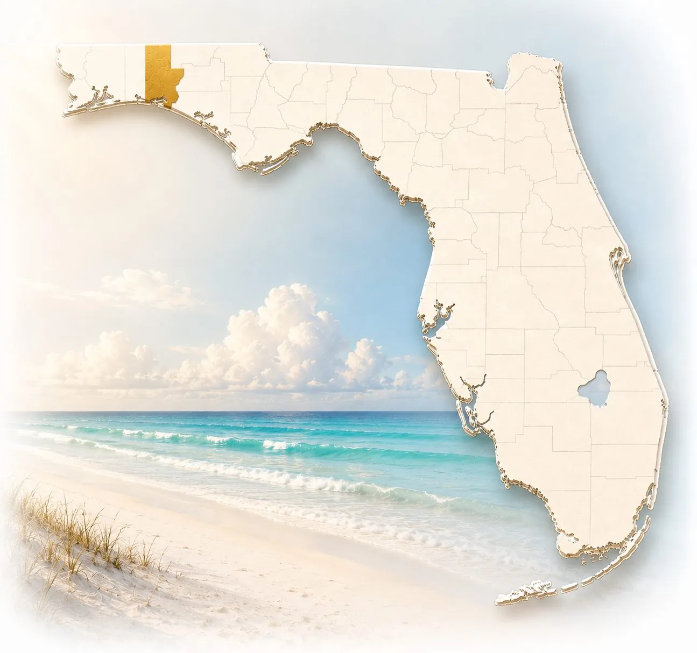
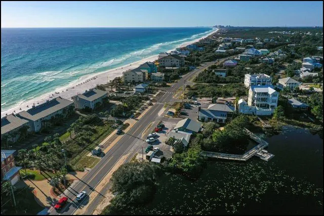
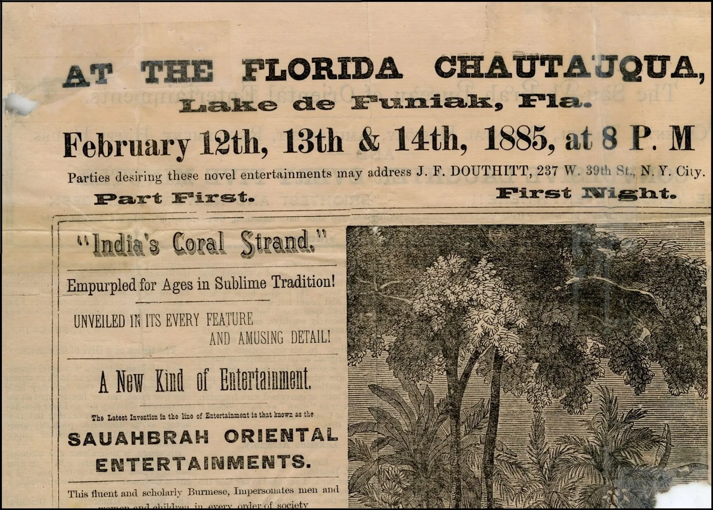
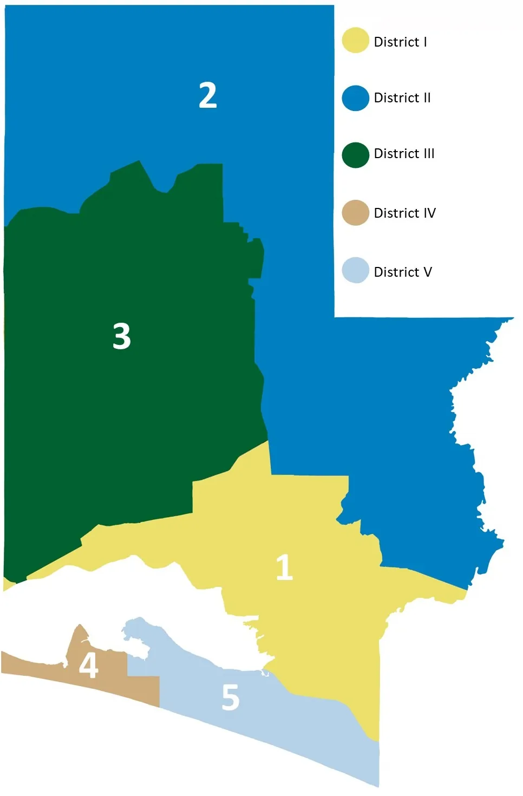

Geographic Features
Walton County includes 26 miles of Gulf coastline, coastal dune lakes, forests, wetlands, rivers, lakes, and Britton Hill, the highest natural point in Florida.

Walton County is located in northwest Florida, bordered by rivers, forests, lakes, and the Gulf of Mexico. Established in 1824, the county has grown from early timber and agricultural communities into a diverse coastal and inland economy with a strong connection to place.
Walton County includes both inland communities rooted in history, agriculture, public service, and small-town civic life, and coastal communities shaped by tourism, conservation, recreation, and the Gulf economy.
The annual budget supports this broad service landscape by funding public safety, transportation, parks, libraries, environmental resources, constitutional offices, and countywide operations.
This balance of rivers, inland communities, and Gulf shoreline has long shaped how Walton County tells its story:
Lying here, as it were, in the protecting arms of her bounding rivers, with these loving daughters keeping faithful watch, with her head resting in the lap of Alabama that says, ‘Here let us rest,’ while the great Mexican Gulf, at one time, humbly washes her feet with its gentle waves to make them pure and white like snow.
John L. McKinnon, History of Walton County
From Britton Hill to the Gulf, Walton County's geography and culture shape the services residents and visitors rely on.

Walton County includes 26 miles of Gulf coastline, coastal dune lakes, forests, wetlands, rivers, lakes, and Britton Hill, the highest natural point in Florida.

South Walton and Scenic Highway 30A include distinctive communities, state parks, local businesses, visitor destinations, and natural resources that require careful stewardship.

Walton County's history includes Native American communities, early settlement, timber and lumber industries, and the Chautauqua tradition in DeFuniak Springs.
This short video provides additional historical information about Walton County.
Walton County operates under a commission-administrator form of government. The Board of County Commissioners sets policy direction and adopts the annual budget, while the County Administrator oversees day-to-day operations and implementation.

Each commissioner resides in the district they represent, and commissioners are elected at large by all county voters. Districts One, Three, and Five are elected during presidential election years; Districts Two and Four are elected during midterm election years.
The Board establishes public policy through ordinances and resolutions, levies taxes and fees, adopts the annual budget, oversees infrastructure and services, approves expenditures, and appoints members to boards and commissions.
View Board of County CommissionersConstitutional Officer budgets are included in the annual budget, while each office operates independently under Florida Statutes and constitutional authority.